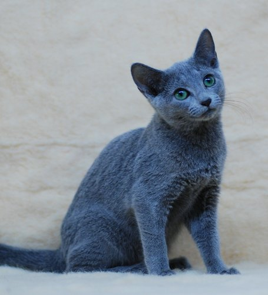

首頁

俄羅斯藍貓
俄羅斯藍貓頭部彷彿由數個平面構成，額頭平坦，由側面看像蛇，故稱作「眼鏡蛇的頭」。 全身由帶銀光的藍毛包著，眼睛為綠色。雖然有人說，以名字看，應源於 北歐及歐俄北部，但正確起源仍是謎。不過，由英國人培育品種之說法，倒成為定論。 19世紀末，該貓首度出現於貓展。當時的體型接近短身型；但世界大戰後，常與暹羅貓交配，變成纖細體型。不過自1960年代以後，有返回原體型的傾向。 其四肢細長、臉窄小，大耳朵極薄，具雙層短毛。此貓性情內斂且溫馴，絕不會亂叫。